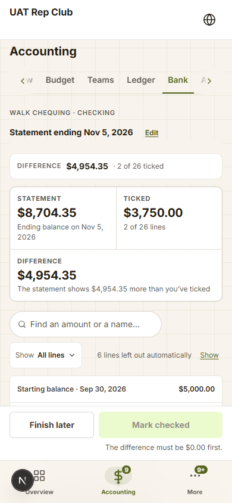
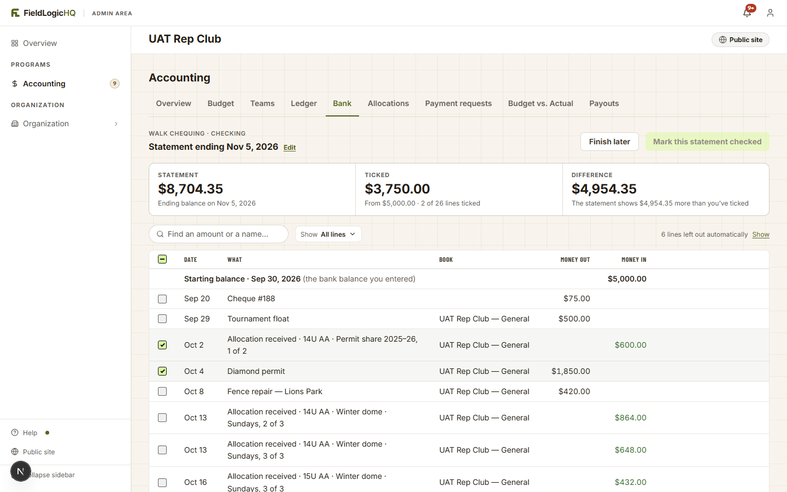

Bank reconciliation · both portals · the balance check · 2026-11-05 · round 1 · asks ruled 2026-11-05
Type the bank’s balance, see the gap, find what’s missing
The owner ruled on 2026-11-05 that checking the bank should be simpler, in both the club and the coach portals. The person types a statement’s date and balance. Every line in the books up to that date counts automatically. The screen shows what should be in the bank, the difference, and help finding what’s missing. A check can be saved while it’s still off, and it then reads “Off by $X”. Nobody ticks lines they have already entered. This page draws that model and the three ways cash could work, and puts the open choices on the last tab. All words are drafts for /marketing. The club example is the fictional Lakeshore Lynx, and the coach example is the fictional Ridge 13U.
From ticking every line to explaining one difference
Today (built on dev, club only)
Type the statement’s end date and balance.
Tick every line the bank shows: 26 ticks on the example statement.
Reach a Difference of exactly $0.00, or you can’t mark it checked.
A starting date, a 30-day lookback, statement windows and carried lists decide which lines appear. That’s why Sep 20 showed up on a Sep 30 to Nov 5 statement.
The balance check
Type the statement’s date and balance.
Every line in the books up to that date counts. Nothing to tick.
Read one comparison: what the bank says and what should be there.
If it’s off, the screen lists the suspects and names the likely culprit.
Save it, matched or off by an amount.
What stays from the built work
Bank accounts, more than one per club, and which books use each.
“Bank checked through {date}” on the Overview and for the club’s teams (R0 tab 7 as approved).
Adding a bank fee becomes “Add the missing line”, the ordinary add form.
Stripe payouts: the app now explains them by itself (tab 6).
The association report, built from the check (Ask 9).
What goes away. The tick column and the Ticked figure. Starting-point picks and the 30-day lookback. Statement windows and the carried lists. “Didn’t go through the bank” on each line and its kept-out shelf. Finish later. Mark checked again and “changed since it was checked”. Undo the latest only, with a reason. On a phone, the pinned strip and the bottom dock. The club’s Bank tab is built on dev and has never been on production, so this replaces it with no customer data to move.
View
Today · phone capture, Nov 5

The balance check · phone, club, a check that matches
Lakeshore Lynx◍
Accounting
TeamsLedgerBankAllocations›
Club chequing · checked through Sep 30, 2026
Check a statement
Statement date *Oct 31, 2026
Bank balance *$7,843.53
The bank says$7,843.53on Oct 31
Should be there$7,843.53your books, less $412.00 on its way
DifferenceMatchesThe bank and your books agree on Oct 31.
Save this check
Checked statements
4
OverviewCalendarRep teamsAccountingMore
Today · desktop capture, Nov 5

Today’s captures · hidden while showing only what differs
A check that matches
The Bank tab is one page: the check on top, the saved checks under it (tab 5). Typing the balance updates the band as you type. The middle tile is the sum everything else rests on, so it opens to show how it was reached. The band is the shipped money band, three tiles joined.
Club · Accounting → Bank · desktop
Proposed · Oct 31 statement, matches
FieldLogicHQAdmin area
Lakeshore LynxPublic site
Accounting
OverviewBudgetTeamsLedgerBankAllocationsPayment requestsBudget vs. ActualPayouts
AccountClub chequingChecked through Sep 30, 2026Name and books
Check a statement
Statement date *Oct 31, 2026
Bank balance on that date *$7,843.53
Save this check
The bank says$7,843.53Statement balance on Oct 31, 2026
Should be in the bank$7,843.53Your books on Oct 31, less what hasn’t reached the bank yet
DifferenceMatchesThe bank and your books agree on Oct 31.
Your books on Oct 31 · General, House league · Fall 2026, Lynx Fall Classic 2026$8,255.53
Online payments on their way to your bank · 2 · Stripe pays them out Nov 3 Show− $412.00
Should be in the bank$7,843.53
Lines since your last check (Sep 30): 13 · Show them
Should be there$3,060.00your books, less $180.00 cash
DifferenceMatchesThe bank and your books agree on Oct 31.
Your books on Oct 31$3,240.00
Cash not deposited yet− $180.00
Should be in the bank$3,060.00
Save this check
Statements from this season only, since Sep 1, 2026.
OverviewScheduleRosterPracticeMore
Why “Should be in the bank” and not “Your books”
The two figures a volunteer compares should mean the same thing. “Your books” would differ from the bank by money everyone knows is in transit, and every check would open off. The middle tile takes out what the app or the person already knows about, and its sums sit right under it.
The coach’s season
A coach’s books start each season from its opening balance, so the check reads only the working season. That’s the Coaches Portal rule (no year parameter on a live screen), and it needs no starting question: the opening balance is the start.
Words
The middle tile is “Should be in the bank” everywhere; a phone band shortens it to “Should be there” to fit two-up. “Matches” and “Off by $X” are the two results everywhere they show: this band, the saved list, the Overview line and the club’s Teams view.
Off by $75.00: finding what’s missing
Same club, same Oct 31 statement, but the bank says $7,918.53. That’s $75.00 more than should be there. The card grows one section, “Find the $75.00”. It names the likely answer first, then lists the suspects: every line since the last check that matched. The difference and the result are amber; nothing is red, because an off check is allowed and can be saved.
View
Club · desktop, drawn at the page’s content width (the chrome is tab 2’s)
Proposed · off by $75.00
Check a statement
Statement date *Oct 31, 2026
Bank balance on that date *$7,918.53
Save this check
The bank says$7,918.53Statement balance on Oct 31, 2026
Should be in the bank$7,843.53Your books on Oct 31, less what hasn’t reached the bank yet
DifferenceOff by $75.00The bank shows $75.00 more than your books.
Your books on Oct 31 · 3 books$8,255.53
Online payments on their way to your bank · 2 Show− $412.00
Should be in the bank$7,843.53
Find the $75.00
!
Cheque #214 · Umpire clinic (Oct 29) is exactly $75.00. If the bank hasn’t cashed it yet, that’s the gap.Or the bank received $75.00 your books don’t have: a deposit or interest you haven’t entered.
Not in the bank yetAdd the missing line
Lines since your last match · Sep 30, 2026Find an amount or a name…
Date
What
Book
Money out
Money in
Oct 1
Cheque #209 · Facility rental, fall
General
$420.00
Oct 2
Sponsor · Lakeside Dental · E-Transfer
General
$400.00
Oct 4
Concession supplies · debit
General
$186.42
Oct 5
Concession, Oct 4 · cash deposit
General
$312.75
Oct 8
Online payments paid out Oct 8· 8 payments
2 books
$1,284.50
Oct 9
Fall registration · Nguyen · E-Transfer
House league · Fall 2026
$225.00
Oct 15
Cheque #211 · Officials, Oct 12–13
House league · Fall 2026
$240.00
Oct 16
Team entry · Ridgeview Hawks · cheque
Lynx Fall Classic 2026
$350.00
Oct 19
Bake sale · cash deposit
General
$184.50
Oct 22
Cheque #212 · Trophies
Lynx Fall Classic 2026
$212.25
Oct 26
Sponsor · Cedar Lake Auto Glass · cheque
General
$100.00
Oct 29
Cheque #214 · Umpire clinic Exactly $75.00
General
$75.00
Not in the bank yet
Oct 30–31
Online payments · 2 · on their way, counted above
2 books
$412.00
Proposed · club · phone, off by $75.00
Lakeshore Lynx◍
TeamsLedgerBankAllocations›
Check a statement
Statement date *Oct 31, 2026
Bank balance *$7,918.53
The bank says$7,918.53on Oct 31
Should be there$7,843.53your books, less $412.00 on its way
DifferenceOff by $75.00The bank shows $75.00 more than your books.
Find the $75.00
!
Cheque #214 · Umpire clinic (Oct 29) is exactly $75.00.Not cashed yet? Or $75.00 came in that your books don’t have?
Not in the bank yetAdd the missing line
Since your last match · Sep 30
Cheque #214 · Umpire clinic
Oct 29 · General · Exactly $75.00
Not in the bank yet
−$75.00
Sponsor · Cedar Lake Auto Glass
Oct 26 · General · cheque
+$100.00
Cheque #212 · Trophies
Oct 22 · Lynx Fall Classic 2026
−$212.25
Show 10 more
Save this check
It saves as off by $75.00. You can check this statement again later.
OverviewCalendarRep teamsAccountingMore
Proposed · after one tap on “Not in the bank yet”
The bank says$7,918.53
Should be in the bank$7,918.53
DifferenceMatches
Your books on Oct 31$8,255.53
Online payments on their way · 2− $412.00
Not in the bank yet · Cheque #214 · Umpire clinic Undo+ $75.00
Should be in the bank$7,918.53
The hints it can name
A line of exactly the difference (drawn). A line of half the difference, the usual sign of money in entered as money out or the other way round. Two or three lines that add up to it. With none of those, the callout drops away and the list stays.
“Add the missing line”
Opens the ordinary add form for the right portal, with the amount, the date and the direction filled in. A bank fee or interest is just a missing line, so there’s no separate “bank fee” button any more.
Cash: three ways, one recommended
The example. On Oct 30, Ridge 13U collects $180.00 in cash dues (three families, $60.00 each) and enters them. On Nov 2 the coach pays the umpire $40.00 out of the envelope and enters that. On Nov 4 the coach deposits the $140.00 left over. The Oct 31 statement shows none of the cash. The Nov 30 statement shows the $140.00 deposit. Each option below runs this example through both checks.
Why cash is smaller than it looks. In a balance check, cash that’s collected, partly spent and then deposited adds up by itself: the books say +$180.00 − $40.00 = +$140.00, and the bank says +$140.00. Nobody has to tag the deposit to the dues it carried. The only thing the books can’t know is cash still in the envelope on the statement date. All three options are answers to that one fact. A bill a family paid straight to the vendor is already out of the running balance, so it needs nothing here.
View
Option A · per line
Leave a line out of the bank check
Ridge 13U · Money inDues · Patel
DateOct 30, 2026
Amount$60.00
Paid byCash
Oct 31: books skip $180 → Matches Nov 30: bank has +$140, books skip the cash lines → Off by $140.00
Nov 30 · Off by $140.00. The deposit is in the bank, but the dues and the umpire were left out. The coach has to find those four lines (three dues and the umpire) and switch them back on.
Your suggestion, and quick to explain.
Breaks when the cash is deposited, which you said clubs and teams must do.
A checkbox on every money form, in both portals.
Option B · a second place
A cash box beside the bank account
Ridge 13U · Money inDues · Patel
DateOct 30, 2026
Amount$60.00
Where the money isTeam bank accountCash box
Deposit cashNov 4 · $140.00 from the cash box to the team bank account
Count your cash · Nov 30$0.00
The cash box should hold $0.00 · Matches
Oct 31 bank check: $180 is in the cash box → Matches Nov 30: deposit moved $140 → Matches, cash box count Matches
The proper answer: every dollar has a place, and the envelope can be counted.
A question on every money form, a Deposit cash step, and a second check to do.
Forgetting to enter the deposit puts both checks off.
Option C · recommended
One figure on the check
Statement dateOct 31, 2026
Bank balance$3,060.00
Cash not deposited yet$180.00
The bank says$3,060.00
Should be in the bank$3,060.00
DifferenceMatches
Your books on Oct 31$3,240.00
Cash not deposited yet− $180.00
Should be in the bank$3,060.00
Oct 31: $180 in the envelope → Matches Nov 30: envelope empty, field left blank, books +$140 = bank +$140 → Matches
Nothing added to any money form, in either portal.
Fits your point: cash goes to the bank eventually, so only the envelope on the day needs saying.
The figure is typed, not counted against lines. The saved check and the report show it, so a reviewer sees it.
Works for a club’s concession float too.
Recommendation: C now. It costs one optional field and handles the deposit that breaks A. B is the right answer for a club that runs a real cash float all season. It can be added later as a second account without changing anything C builds, because the check already works per account.
Saved checks, and where the mark shows
A saved check is a record: the date, the bank’s balance, what should have been there, the result, and any “not in the bank yet” or cash figure it used. Each check stands alone. Nothing carries from one to the next, so any of them can be deleted without changing the others.
Club · desktop, under the check (content width)
Proposed · the list (its Oct 31 row is tab 3’s check, saved after “Not in the bank yet”)
Checked statements
Club chequing
Statement date
The bank said
Should have been
Result
Checked by
Oct 31, 2026
$7,918.53
$7,918.53
Matches· 1 cheque not in the bank yet
Priya Shah · Nov 3
›
Sep 30, 2026
$6,120.45
$6,120.45
Matches
Priya Shah · Oct 6
›
Aug 31, 2026
$5,402.10
$5,414.50
Off by $12.40
Dan Ruiz · Sep 9
›
Jul 31, 2026
$4,880.00
$4,880.00
MatchesBooks now say $4,905.00
Dan Ruiz · Aug 4
›
Jun 30, 2026
$4,215.60
Starting point
Dan Ruiz · Jul 2
Proposed · a saved check, opened (form window, 520)
Club chequing · saved checkStatement ending Oct 31, 2026
✕
The bank said$7,918.53
Should have been$7,918.53
ResultMatches
Your books on Oct 31$8,255.53
Online payments on their way · 2− $412.00
Not in the bank yet · Cheque #214+ $75.00
Should have been in the bank$7,918.53
Checked by Priya Shah on Nov 3, 2026.
Delete this checkCloseCheck this statement again
Proposed · where the mark shows
Club Overview · the latest check matchesBank: Club chequing checked through Oct 31, 2026›The latest check is offBank: Club chequing checked through Aug 31, 2026Off by $12.40›Club → Teams, a team’s rowRidge 13U · bank checked through Oct 31, 2026 · Matches
Phone
The list becomes the kit’s white row cards: the date and result on the first line, the two balances under it, a corner chevron. The window opens full screen, as every form window does on a phone.
Club only: the first check, Stripe, a second account
A coach’s books start each season from the opening balance, so a coach never sees a starting question. A club’s books have no opening balance, so the first check on each account asks for one statement to start from. That replaces today’s set-up step, the 30-day picker and “Add one the books don’t have”.
Proposed · the first time, on a new account
Start checking Club chequing
Pick a bank statement you already have and type its date and ending balance. Checks start from there.
Statement date *Jun 30, 2026
Bank balance on that date *$4,215.60
Start here
Books in this account: General, House league · Fall 2026, Lynx Fall Classic 2026 · Change
What it gives up
Today’s set-up lets the treasurer pick the cheques still outstanding on the start date. Without that, a cheque written before the start and cashed after it shows as “off by” its amount on the next check. Find then names it (“Cheque #188, Sep 20, is exactly $75.00”), and one tap counts it.
Proposed · “Online payments on their way”, opened
Your books on Oct 31$8,255.53
Online payments on their way to your bank · 2 Hide− $412.00
Oct 30 · Fall registration · Chen · card · House league · Fall 2026$100.00
Oct 31 · Team entry · Cedar Lake Comets · card · Lynx Fall Classic 2026$312.00
Stripe pays these out on Nov 3, 2026 · Payouts tab
Should be in the bank$7,843.53
Fees and grouped deposits
The books record each payment and the club’s processing cost (where the club pays it), so a payout that has landed already matches its books. Only what is still in transit needs explaining, and the app knows that from Stripe. A payout Stripe can’t be reached for shows a quiet notice and leaves the line out, so the check reads off by that amount rather than guessing.
Proposed · two accounts: the Account pill, open
AccountClub chequing
Club chequingOct 31 · Matches
Gaming · casinoSep 30 · Matches
Add an account
Asks
Ruled 2026-11-05: all ten A, as recommended, no notes. The green rows below are now the rulings. The R2 owner walk is stopped; the plan is being rewritten to this model.
Two of your answers are already ruled and drawn: both portals use the balance check, and a check saves while it’s off. These are the choices the drawing raised. Pick one per ask; the green row is my recommendation. Ask 1 first: it decides whether any money form changes. Press “Make my answers” and paste the text back into the chat.